通知转任务网页 · 文本、图片、PDF、对比与错误状态
| 测试项 | 覆盖次数 | 参与者 | 结果 |
|---|---|---|---|
| 文字通知解析 | 4 次 | 第二、三、五、八位 | 全部生成结构化结果 |
| 图片通知解析 | 2 次 | 第一、七位 | 均生成结果；第七位触发疑点确认 |
| 文字型 PDF 解析 | 2 次 | 第四、六位 | 两位均生成结构化结果，第六位完成加入清单 |
| 扫描版 PDF | 1 次 | 第九位 | 正确显示错误提示，未完成恢复 |
| 补充通知对比 | 1 次 | 第八位 | 完成差异展示，存在新增/删除语义重复 |
| 加入任务清单 | 1 次 | 第六位 | 成功加入任务清单 |
| 材料清单展示 | 7 次 | 第一至第六位、第八位 | 材料条目与原文出处可见 |
| 图片截断确认 | 1 次 | 第七位 | 系统正确停止猜测并请求确认 |
| 问答与导出 | 0 次 | 未提供截图 | 需要补测 |
| 优先级 | 问题 | 证据 | 现象 | 建议 |
|---|---|---|---|---|
| P2 | 通知对比语义重复 | 第八位 | 部分材料同时显示“新增”和“可能删除”，用户难以判断最终保留哪一项。 | 区分“明确新增、明确删除、待确认变更”，并合并同一条目的差异。 |
| P2 | 扫描 PDF 错误后的恢复链路 | 第九位 | 错误说明清楚，但截图没有展示切换截图或粘贴文字后的完成结果。 | 补充错误后的恢复回归测试，并记录完整闭环。 |
| 良好 | 图片截断保护 | 第七位 | 系统没有补全被截断的赛制，而是明确提示确认，降低错误解析风险。 | 保留该行为，并补充键盘确认和取消回归。 |
2026-11-18 12:35 · 图片通知 · 桌面浏览器 / 图片上传
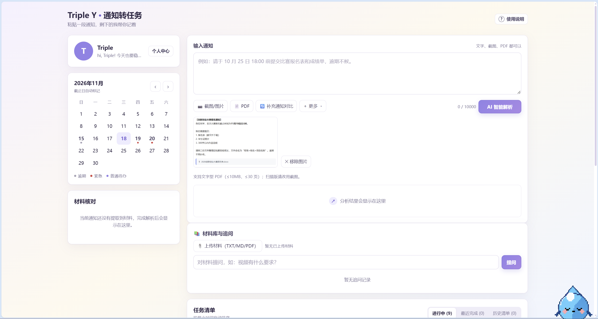
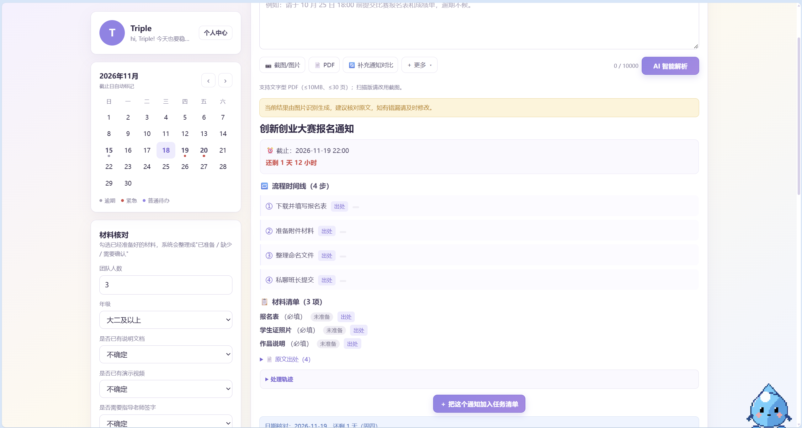
2026-11-18 12:37 · 文字通知 · 桌面浏览器
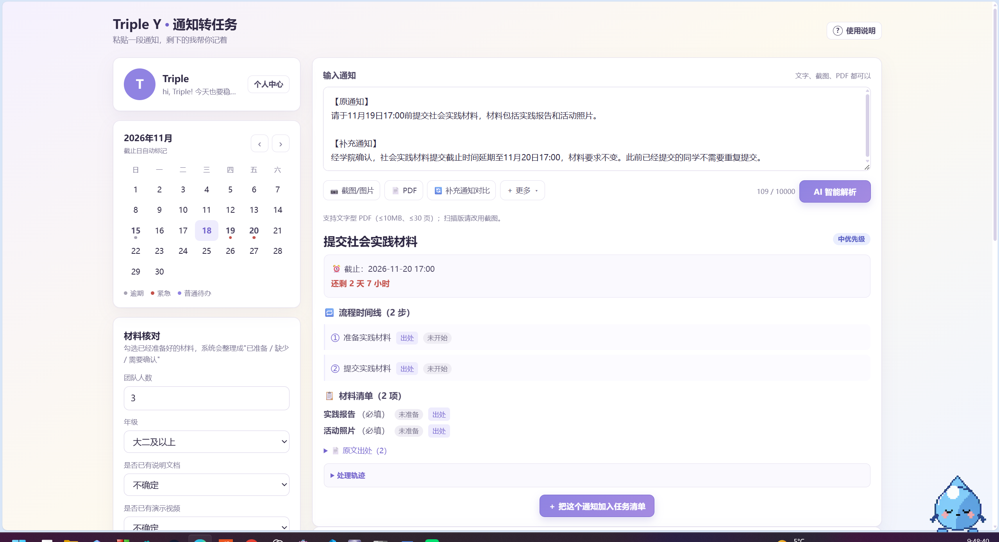
2026-11-18 13:01 · 文字通知 · 桌面浏览器
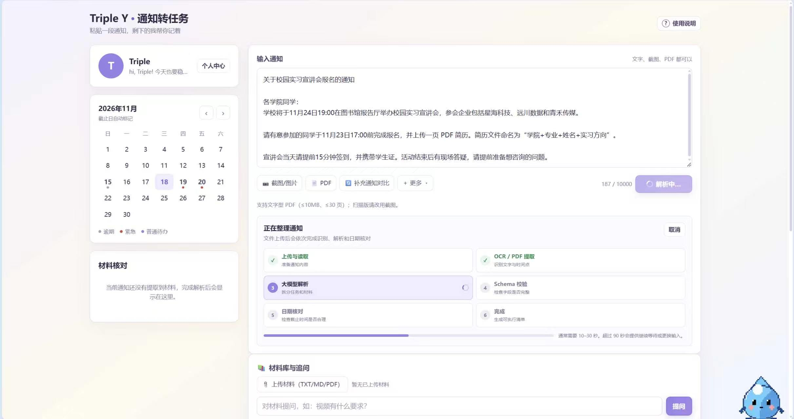
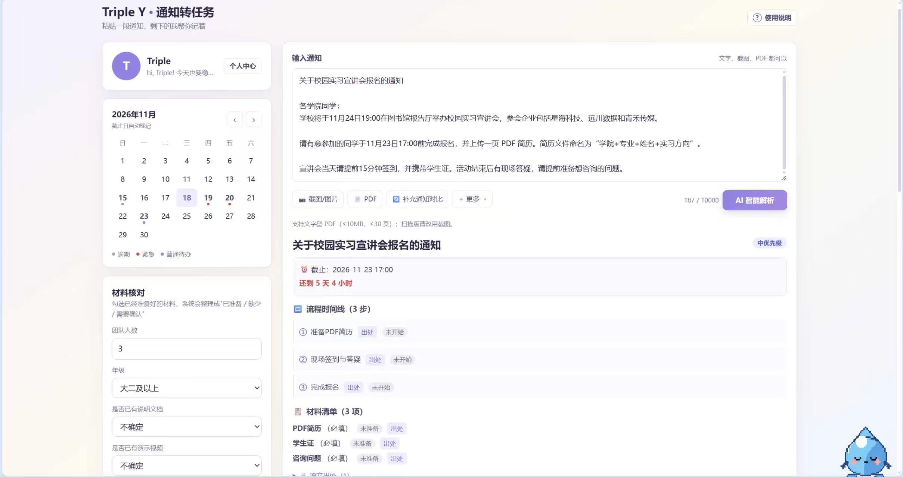
2026-11-18 13:13 · 文字型 PDF · 桌面浏览器 / PDF 上传
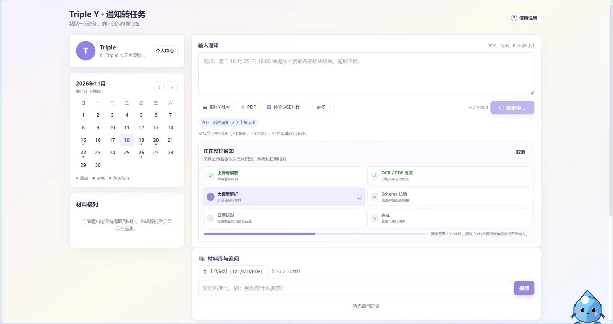
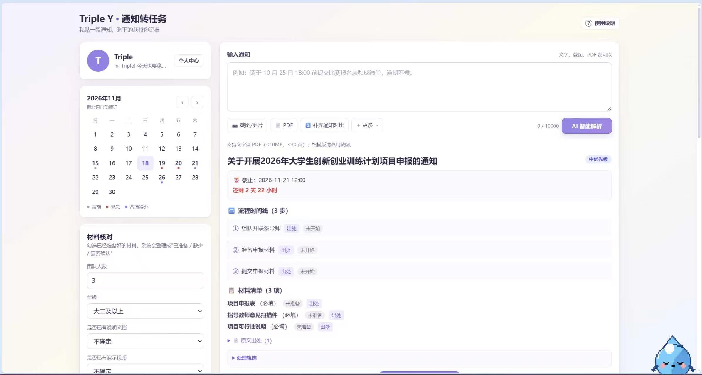
2026-11-18 12:36 · 长文字通知 · 桌面浏览器
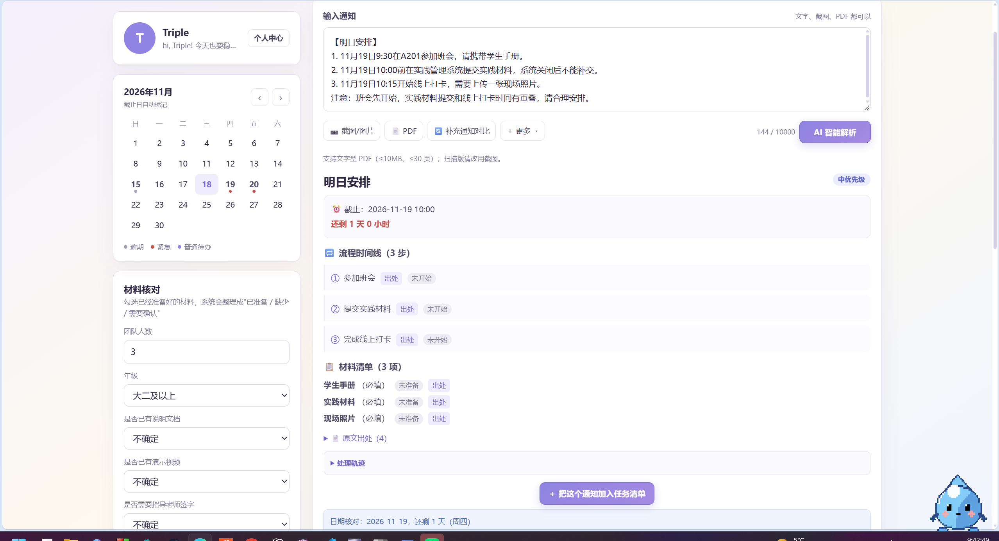
2026-11-18 13:02 · 文字型 PDF · 桌面浏览器 / PDF 上传
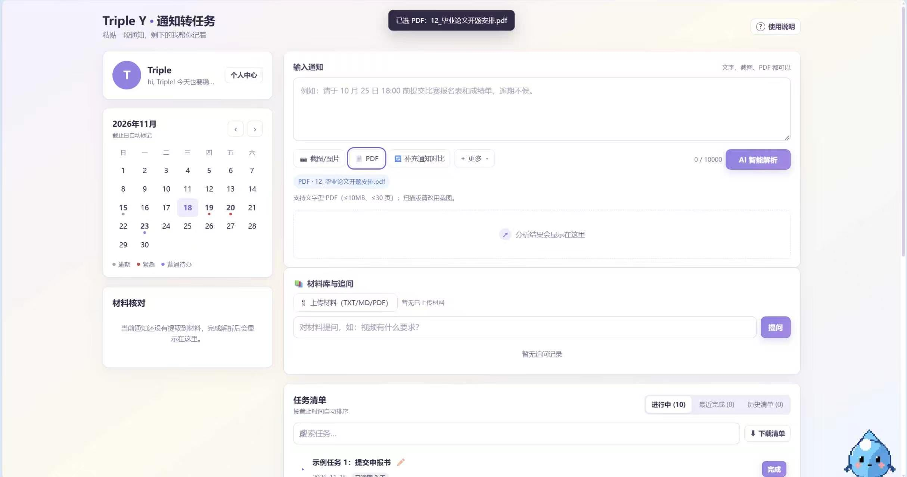
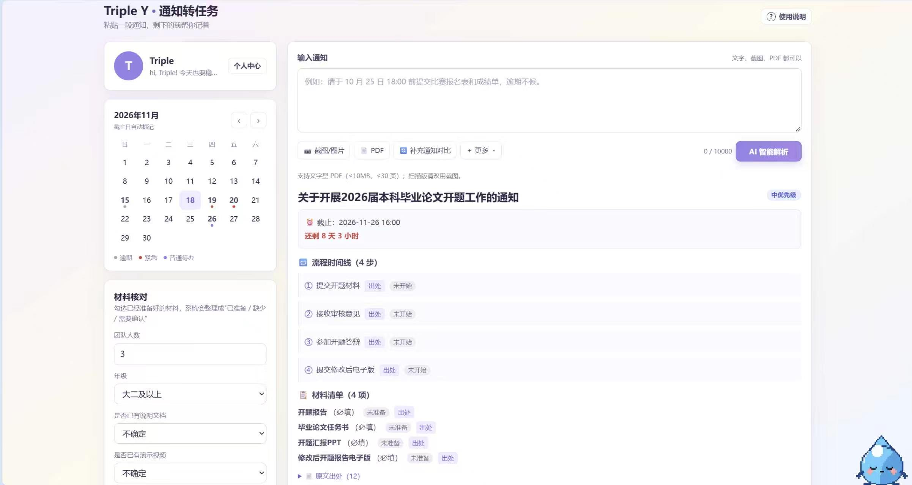
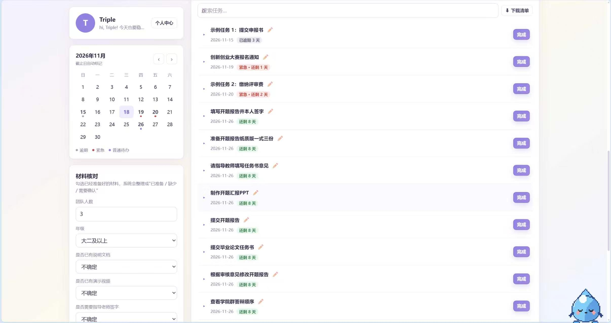
2026-11-18 12:38 · 手机截图通知 · 手机截图输入 / 桌面端图片解析
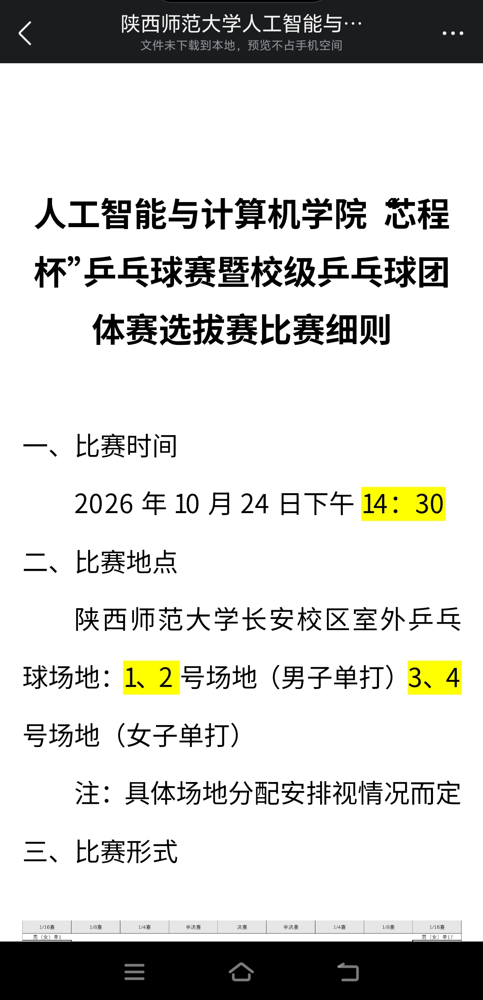
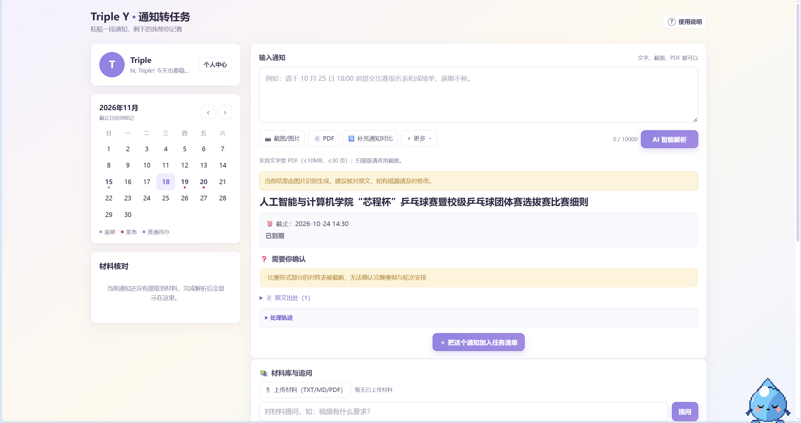
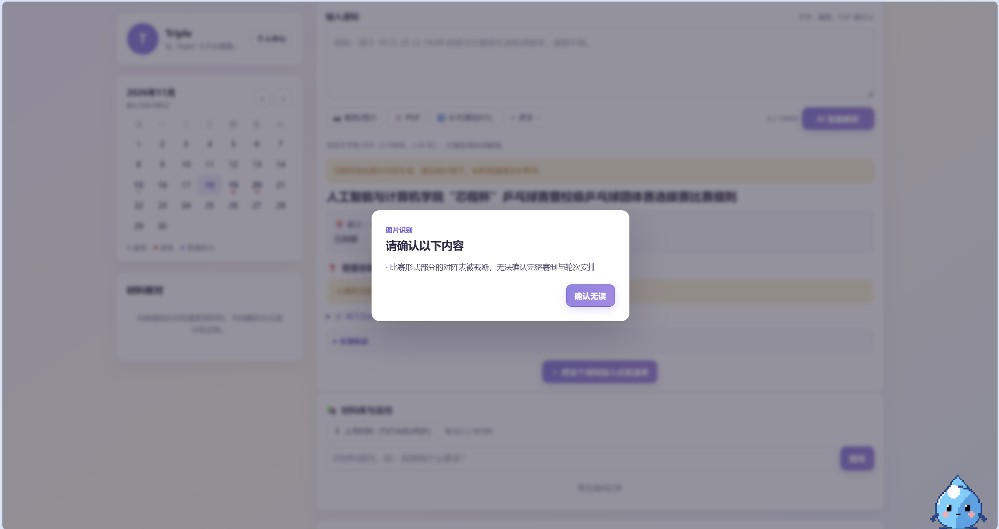
2026-11-18 13:07 · 双文本对比 · 桌面浏览器
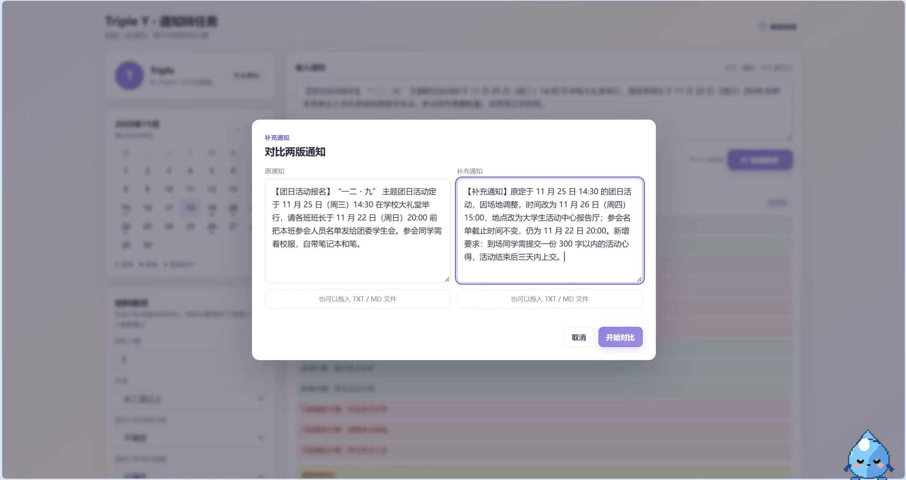
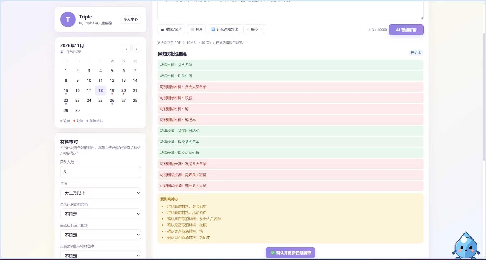
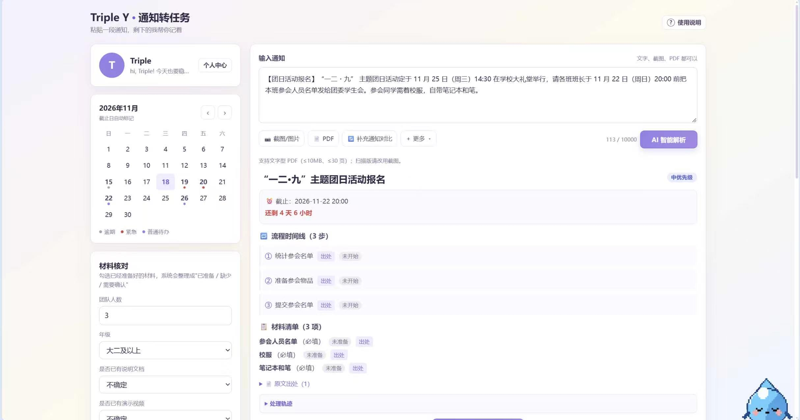
2026-11-18 13:02 · 扫描版 PDF · 桌面浏览器 / PDF 上传
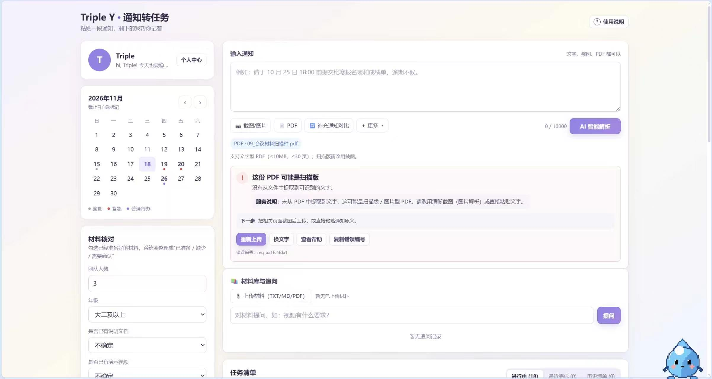
| 参与者 | 截图文件 |
|---|---|
| 第一位 | 原始截图/第一位/01-创新创业大赛图片输入.png 原始截图/第一位/02-创新创业大赛解析结果.png |
| 第二位 | 原始截图/第二位/01-社会实践补充通知解析结果.png |
| 第三位 | 原始截图/第三位/01-校园实习通知处理中.jpg 原始截图/第三位/02-校园实习通知解析结果.jpg |
| 第四位 | 原始截图/第四位/01-创新创业PDF处理中.jpg 原始截图/第四位/02-创新创业PDF解析结果.jpg |
| 第五位 | 原始截图/第五位/01-明日安排解析结果.png |
| 第六位 | 原始截图/第六位/01-毕业论文PDF处理中.jpg 原始截图/第六位/02-毕业论文解析结果.jpg 原始截图/第六位/03-毕业论文任务清单.jpg |
| 第七位 | 原始截图/第七位/01-手机端乒乓球比赛通知.jpg 原始截图/第七位/02-图片解析与疑点确认.png 原始截图/第七位/03-确认弹窗.png |
| 第八位 | 原始截图/第八位/01-原通知与补充通知输入.jpg 原始截图/第八位/02-通知对比结果.jpg 原始截图/第八位/03-原通知解析结果.jpg |
| 第九位 | 原始截图/第九位/01-扫描PDF错误状态.jpg |